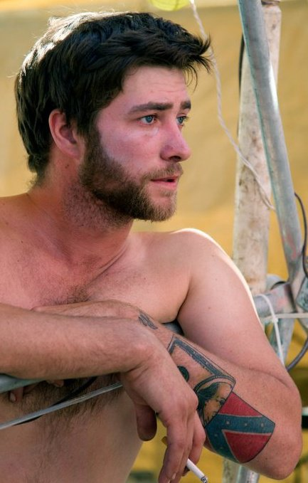

Who is The Dillman?
Who is the Dillman? The Dillman is a straight shooter. He will openly say "I just wanna party!!" and mean it. The Party Party is a movement led by The Dillman as an answer to the old "Burner" status quo. Honestly, who doesn't want to party?
I know that Dr Fox says "The position of mayor is not about the event; it’s about the city. It's about the community and the people who raise it out of the dust" but if I am elected mayor, it will ONLY be about the event and only be about the PARTY!!
Remember when Burning Man was fun? You may have noticed that the last four years have turned Black Rock City into a pretentious, high-falootin’ hipster circle-jerk. You have your mayor, Dr Fox, to thank for that.
He’ll take credit for everything you’ve enjoyed in the last for years, and deflecting all the blame for what’s happened to this festival. "You’ll have that on these big jobs," he’ll insist. Oooooooookay. Then why weren’t they happening before he was mayor?
Dr Fox is trying to make a career as a professional politician. He is carpetbagging in BRC (he wasn’t even born in Nevada) because his BMOrg buddies wanted a mayor who'd scratch their backs. The Org doesn't want you to vote because the fewer people who vote, the more likely their puppet will get re-elected. Math, brah.
There comes a time in every Burner's life when he has to ask himself, "Who do I want to speak for me?" I am the voice of this generation of Burners. I represents a new party that speaks to the values that truly dominate the choices we make and how we spend our Burns: We are the Party Party.
The question being asked in this election isn't what kind of city you want to to have, but what kind of person you want representing it. Not What, but Who?
Bastank.
Wait, what?

What does it mean for BRC if The Dillman is elected mayor??
- It means that no longer will you have to worry 'bout punk rock bitches interfering with you party.
- No longer will you have to wonder if it is ok for you to party till you can't take care of yourself anymore
- No longer will you have to worry if there will be enough tickets for you and all your newbie sparkle-pony friends to get in.
- No longer will you have to endure to agony of long-time burners who have a deep-rooted and very strong and valid connection with this event, experience, and location tell you how you should conduct yourself in this fine city.
Social Studies
Duties of a Mayor that Dr Fox has failed at:
- The mayor usually greets important visitors, gives formal and informal talks, and takes part in public events. Who is more important than you and how many times has Dr Fox greeted you??
- Executing official documents. Name one document Dr Fox has ever executed!! Exactly.
- Investigating fires. Really?! Also I will remove this duty if elected.